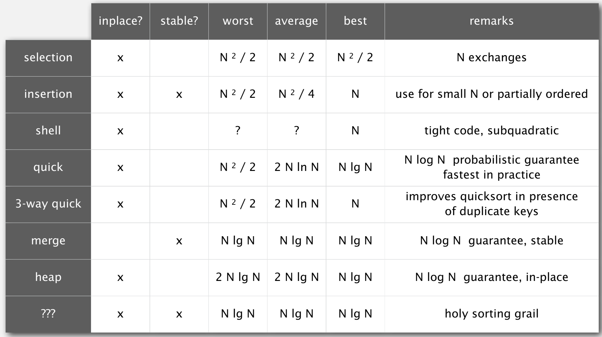

Scenario
Try to sort the following cards (Min —> Max)!

Sort Complexity
$$ 2^h \ge \#leaves \ge N! \\
\Rightarrow h \ge lg(N!) \simeq N \bullet log(N)$$
Selection sort
Idea
- In interation
i, select indexminof smallest remaining entry. - Swap
a[i]anda[min]
Code Sample
// v is the original array |
Analysis
- Visualization:
Figure 3. Selection Sort Visualization - Proposition:
- Time Complexity: $ (N - 1) + (N - 2) + … + 1 + 0 \sim N^2/2 $
- Space Complexity: $ \sim 1 $
- Stable: No
- Other Features: Running time insensitive to input & Data movement is minimal.
Insertion sort
Idea
- In iteration
i, swapa[i]with each larger entry to its left.
Code Sample
// v is the original array |
Analysis
- Visualization:
Figure 4. Insertion Sort Visualization - Proposition:
- Time Complexity:
- Random-ordered array with distinct keys: $ \sim \frac{N^2}{4} $(Expect Half-Way Comparation)
- Best case with sorted array: $ N - 1 $
- Worsest case with reversed sorted array: $ 0 + 1 + … + (N - 2) + (N - 1) \sim \frac{N^2}{2} $
- Space Complexity: $ \sim 1$
- Stable: Yes
- Other Features:
- Data Sensitive to input & Lots of data movements
- Partial Sorted Array(Linear Time Complexity):
- Definition: Number of Inversions pair is $ \leq cN $
- Best: $ Num_{inv} $ - Number of Inversions pair
- Worst: $ Num_{inv} + (N - 1) $
- Explanation: If
a[i]does not reach to the left bound of array, then there will be one more compare.
- Time Complexity:
Shell sort
Idea
- Move entries more than one position at a time by h-sorting the array.
Code Sample
// v is the original array |
Analysis
- Visualization:
Figure 5. Shell Sort Visualization - Proposition:
- Time Complexity: $ \sim N^{\frac{3}{2}}$
- Space Complexity: $ \sim 1 $
- Stable: Yes
- Other Features: Fast in small array and used in some embedded system.
Merge sort
Idea
- Divide array into two halves
- Recursively sort each half
- Merge two halves
Code Sample
// merge two sorted sub-array, lo -> mid, mid+1 -> hi |
Analysis
- Visualization:
Figure 6. Merge Sort Visualization - Proposition:
- Time Complexity: $ \sim Nlog(N)$
$$ D(N) \le C(\lceil {N/2} \rceil) + C(\lfloor {N/2} \rfloor) + N $$Figure 7. Merge Sort Time - Space Complexity: $ \sim N $
- Stable: Yes
- Time Complexity: $ \sim Nlog(N)$
Quick sort
Idea
- Shuffle the array
- Partition so that, for some
j- entry
a[j]is in place - no larger entry to the left of
j - no smaller entry to the right of
j
- entry
- Sort each piece recursively
Code Sample
// Put pivot into right place |
Analysis
- Visualization:
Figure 7. Quick Sort Visualization - Proposition:
- Time Complexity:
- Best and Average: $\sim N \bullet log(N)$
- Worest: $\sim \frac{1}{2} \bullet N^2$
- Qucik-Selection is almost linear time.
- Time Complexity:
Heap sort
Idea
- Basic Knowledge points:
- Complete Binary Tree: Perfectly balanced, except for bottom level.
- Heap-ordered: Parent’s key no smaller than children’s keys.
- Binary Heap: Arrat representation of a heap-ordered complete binary tree.
- Steps:
- Construct a binary heap
- At iteration
i, get the $ i_{th} $ maximum element, and remove it. ++iand goto step 2.
Code Sample
// sink v[i] to appropriate position |
Analysis
- Visualization
Figure 9. Heap Sort Visualization - Proposition:
- Time Complexity: constuction $ \ \le 2N $ + compares $ \ \le 2N \bullet lgN$
- Space Complexity: $ \sim O(1) $
- Stable: No
- Application: Priority Queue
Conclusion
